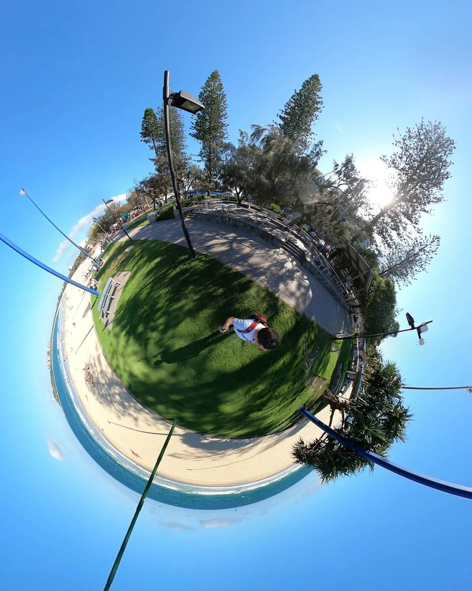
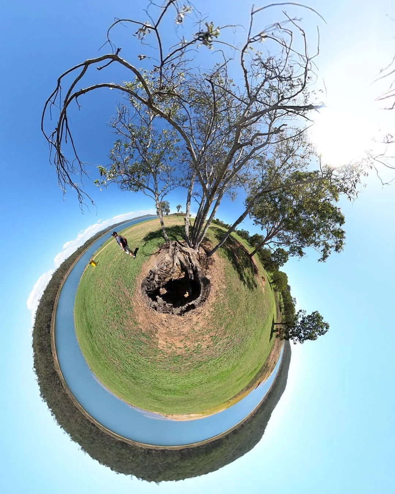
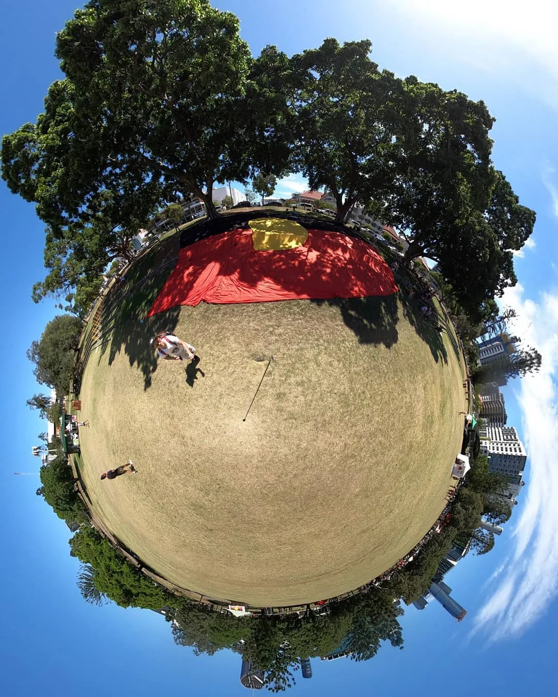

Readiness
Can the journey be entered legally, safely and realistically with the money, health, documents and time available?
A practical and imaginative travel guide for moving through the world with curiosity, care and room for unexpected adventures.

A long journey begins with one real place
The Oracle began with an ambitious dream: travel through roughly 256 countries and territories between 2025 and 2035 while connecting art, relationships, learning and useful work. It is a direction to explore, not a race through a checklist.
The same idea can help with one afternoon, an island visit, a season in another country or many years of travel. It asks what journey makes sense now, what needs checking and when an unexpected invitation may be worth following.
The photographs in this section begin close to home. They are a reminder that curiosity does not need an international flight before it can become a meaningful journey.

Plan enough, then leave room for life
The Oracle checks visas, official travel advice, seasons, events, weather, transport, money, health, energy and local customs. It compares the options, explains them simply and leaves the final choice with the traveller.
Live location, identity documents, money, relationships and unannounced plans stay private. Visa, safety, health and legal information can change quickly, so official advice must always be checked before travel.

Acts of joy around the world
The long journey is meant to connect with festivals, art, relationships, learning and useful local work. A country is not a trophy and a person is not travel content.
The Oracle therefore asks more than “Can I get there?” It asks who invited the visit, what can be learned, what can be contributed, what should remain private and whether the journey leaves enough energy to be present when Luke arrives.
A good next destination is not simply the cheapest flight or the most popular place.
Can the journey be entered legally, safely and realistically with the money, health, documents and time available?
Which people, cultures, invitations and relationships make a place meaningful?
Can the visit support music, learning, helping others or another honest reason to be there?
What unexpected invitation deserves a closer look, and what is the smallest sensible yes?
One helps choose where to go. The other helps Australians handle the practical details.
A human-guided travel helper for comparing places, making choices and remembering what matters.
Open the Oracle → Handle the detailsPractical help with visas, documents, embassies, transport and planning a long journey.
Open the travel tools →